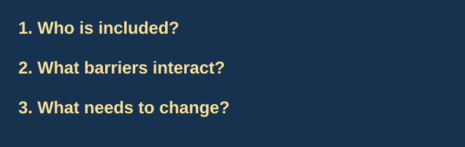

Implicit bias resource guide
Short explanations and starting points for students encountering these ideas for the first time.
1. What is implicit bias?
Implicit bias involves associations that can operate without conscious awareness. These associations may differ from the beliefs someone openly expresses. Learning about them can help us question quick judgments.
Project Implicit: educational resources — background from the research organization behind the Implicit Association Test.
2. What can a bias test tell us?
An implicit bias test (IBT) can be a starting point for learning about automatic associations. One widely used tool is the Implicit Association Test, or IAT. It compares how quickly people sort concepts into paired categories. It measures relative associations; a result is not a diagnosis or a complete description of someone’s character.
Project Implicit cautions that one person’s result is not a reliable prediction of a particular action at a particular moment. A score is a starting point for questions, not a final judgment.
Read the Project Implicit FAQ — useful context about what results can and cannot mean.
3. What is intersectionality?
Kimberlé Crenshaw developed intersectionality to examine how systems of inequality interact. For example, looking at race and gender separately can overlook the specific discrimination experienced by Black women. The framework asks us to consider how institutions shape these experiences together.
Meet Kimberlé Crenshaw — Columbia Law School’s introduction to her work.

4. Thoughts and examples
A coding club could welcome everyone in its description while scheduling every meeting when students with evening jobs cannot attend. An invitation alone does not remove a practical barrier. Asking whose schedules and resources were assumed can reveal where a design needs to change.
Bias awareness can be useful, but it should lead to a concrete question: what decision will be made differently? In a group project, one possible step is to rotate technical and presentation roles instead of assuming who is best suited to each.
Questions for your own reflection
- What did you expect before taking an IBT, and what actually surprised you?
- What are the limits of using one result to describe a person?
- Where have you noticed an access barrier, and what could reduce it?
Using sources carefully
Check who made a resource, what evidence it uses, and whether its claims have limits. Compare explanations instead of relying on the first result you see.
Princeton Public Library’s information guide inspired the organization of this page into explanations and annotated resources.